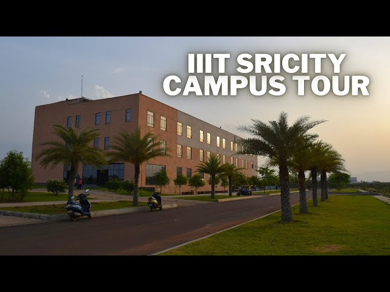

Wi-Bi
Workshop
2023
18th-22th December 2023
IIIT Sricity
About The workshop
The objective of the workshop is to provide participants with a
comprehensive understanding of the fundamental
concepts, advanced technologies, and practical applications of
wireless and molecular communications. By
exploring these topics, the workshop aims to achieve the
following objectives
- Understanding of
fundamentals of wireless channels and its physical
aspects.
- Exploiting various emerging topics of 5G and
beyond such as NOMA, massive MIMO, IRS, energy
harvesting, application of cooperative communication
and UAV,
etc.
- Exploring the protocols and algorithms for the next
generation wireless and molecular
communications.
- To explore biological communications and its
applications such as molecular and synaptic
communications.
- To gain the knowledge of molecular channels for
biological applications such as
targeted drug delivery and health monitoring.
- Understanding the current research trends on 6G
communication.
- To have industrial exposure to the
participants in the domain of Wi-Bi
communications.
- Designing of particular based simulator for
molecular
communication on MATLAB.
"It is envisioned that the next decade would see a much
higher penetration of academic activities by the
industries and absorbing their requirements. Through
this conference, IIIT Sri City aims to create a
benchmark for industry-based research and technology
conferences in India. The participants would not
only involve traditional researchers and academic
faculties, but also industry-based developers,
technical architects, analysts and techno-managers so
that they have the opportunity to interact,
participate and set the tone for conference
presentations and interactions."
Organizers
Here’s a good place to list the organizers and
sponsors of the conference,
as well as list contact information for the organizers,
and show off the logos of the sponsors.
It looks like his conference was sponsored by kittens!